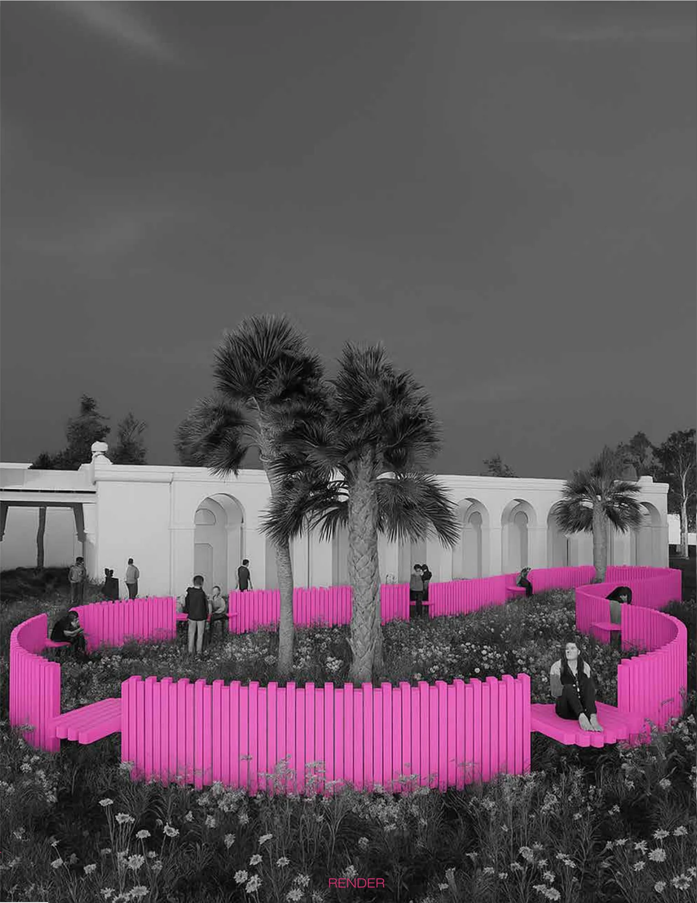
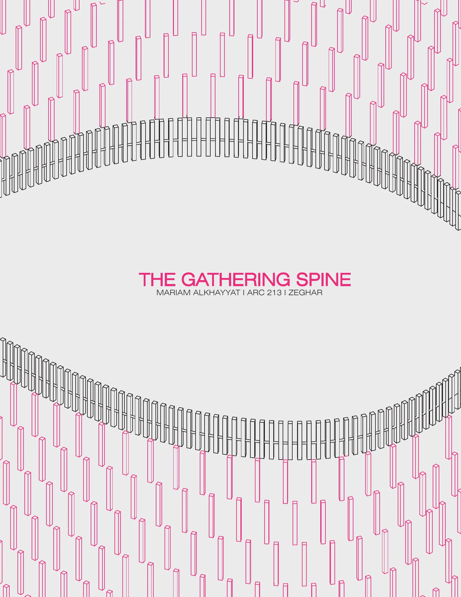
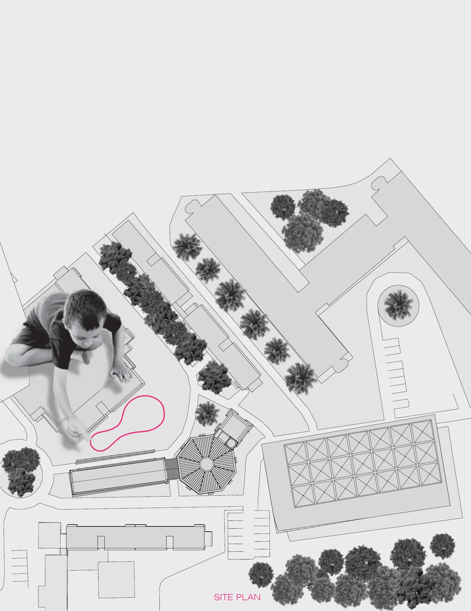
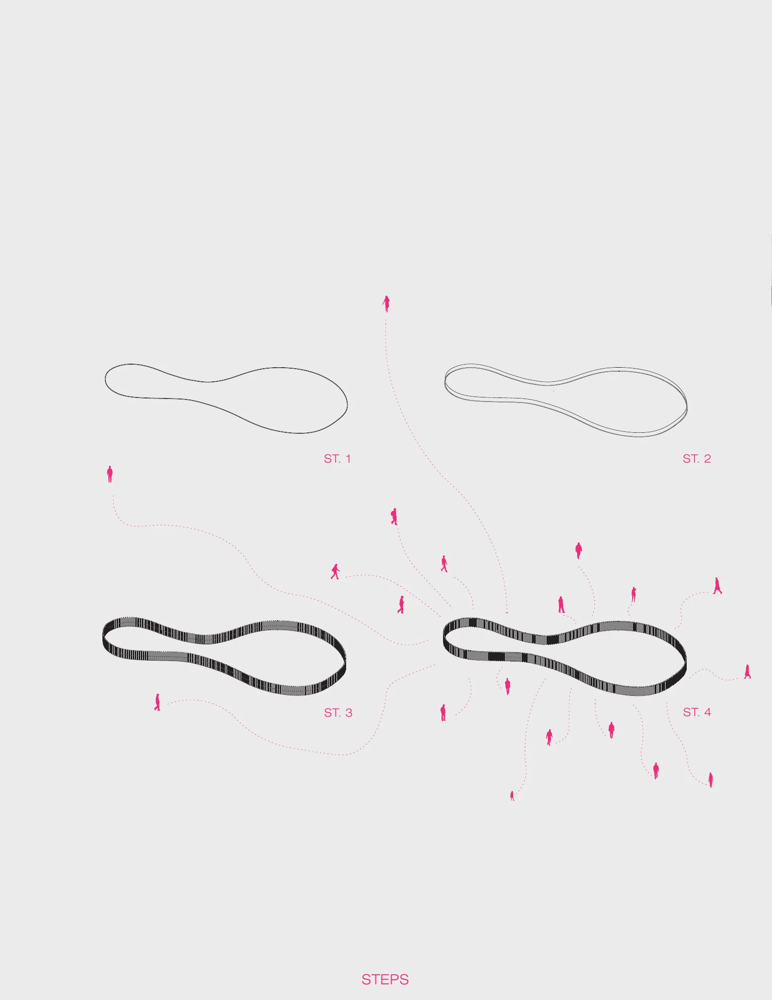
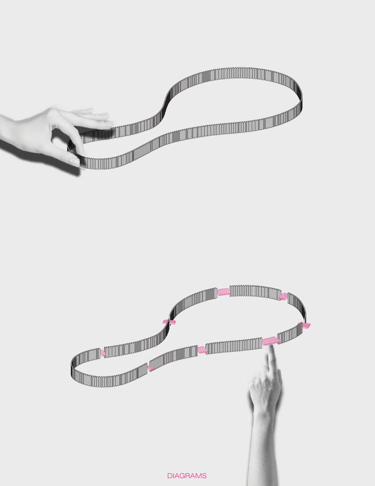
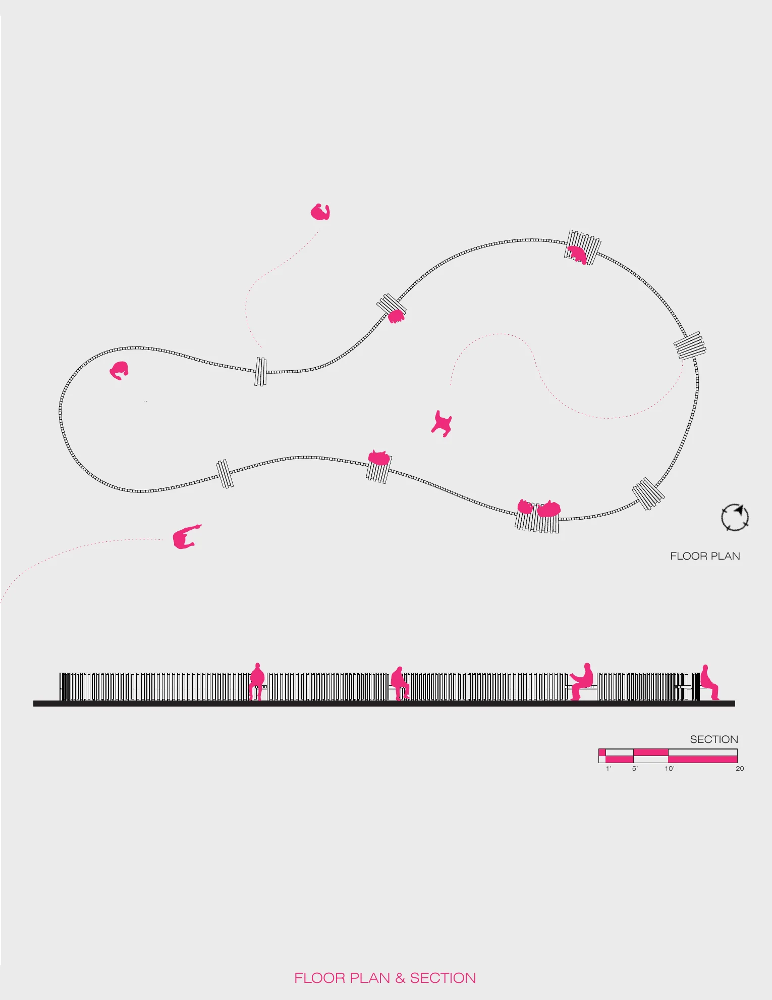
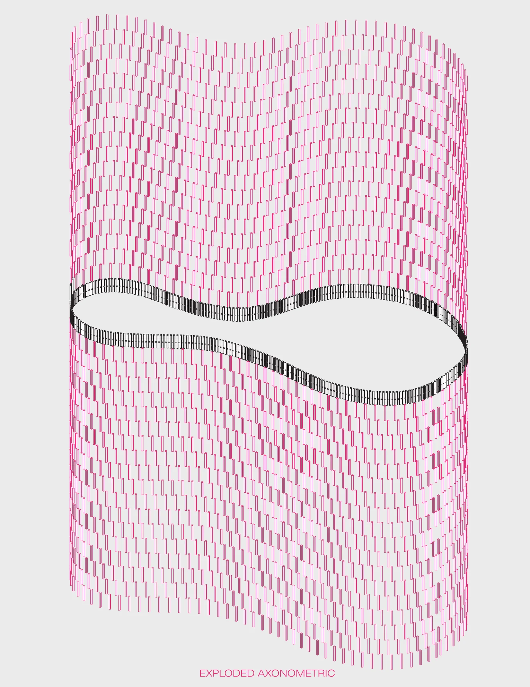
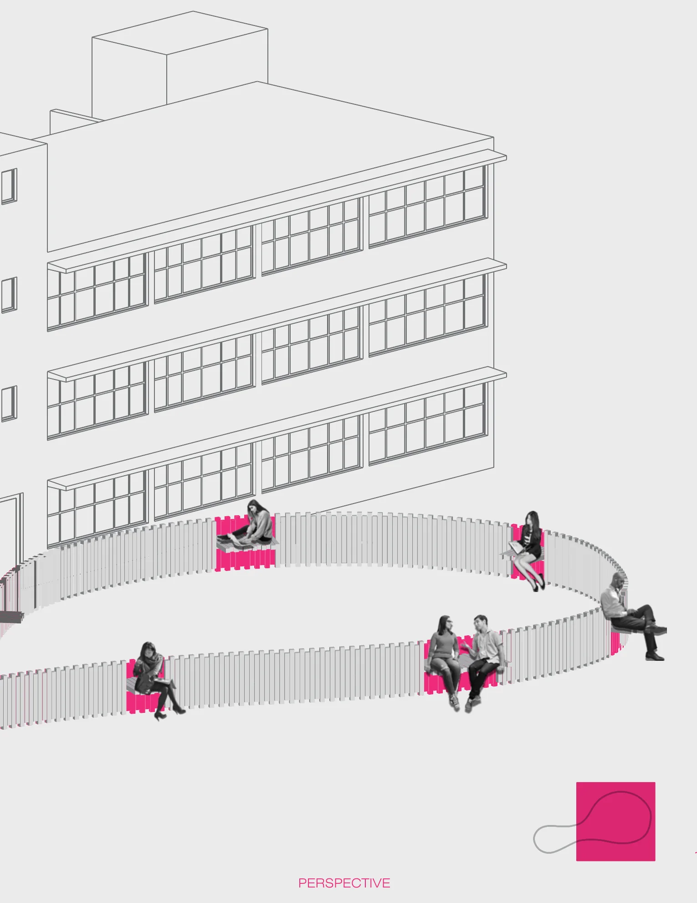

The Gathering Spine
A parametric interactive installation designed in Grasshopper that responds to human presence. Individual segments shift from vertical to horizontal, transforming the piece from a sculptural wall into a continuous surface for sitting or lying down. The project explores movement, adaptability, and human interaction through computational design.







